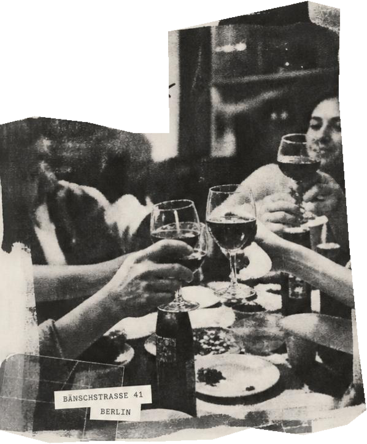
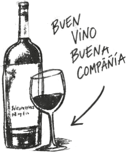

Unser Restaurant
Kleine Gerichte, große Weine und ein Stück Spanien in Berlin. Ein lebendiger Ort zum Teilen, Genießen und Wiederkommen.
Mehr erfahren
Ein Ort für gute Produkte,
ehrliche Küche und inspirierende Begegnungen. Spanien im Herzen,
Berlin im Alltag.
Kleine Gerichte, große Weine und ein Stück Spanien in Berlin. Ein lebendiger Ort zum Teilen, Genießen und Wiederkommen.
Mehr erfahrenSaisonale Tapas, Klassiker und besondere Weine. Unsere vollständige Auswahl an einem Ort.
Zur Karte
 Menschen. Kein Konzept.
Menschen. Kein Konzept.DIE VINERIA · FRIEDRICHSHAIN
Kleine Teller, ausgesuchte Weine und die Menschen, mit denen man gerne noch ein bisschen bleibt. Ein Ort zum Teilen, Genießen und Wiederkommen.
Ein bisschen Spanien. Ein bisschen Uruguay. Und ganz viel Berlin.
Ein Abend mit Eurer Runde ↗
TIENDA · PRODUCTOS ESPAÑOLES
Euch gefällt unsere Auswahl? Einige unserer Weine und spanischen Spezialitäten gibt es auch in unserer Tienda. Zum Mitbringen, Aufmachen und Teilen.
Unsere Tienda entdecken →ÖFFNUNGSZEITEN
Küche Dienstag–Samstag bis ca. 22 Uhr.
Tisch reservieren ↗BESONDERE ANLÄSSE · CATERING · GROSSE RUNDE
Geburtstag, Firmenabend, eine große Runde oder spanische Spezialitäten für Eure Feier? Erzählt uns, was Ihr vorhabt. Wir melden uns per E-Mail oder Telefon, um alles Weitere zu besprechen.
Direkt anrufen: +49 30 42024943 ↗